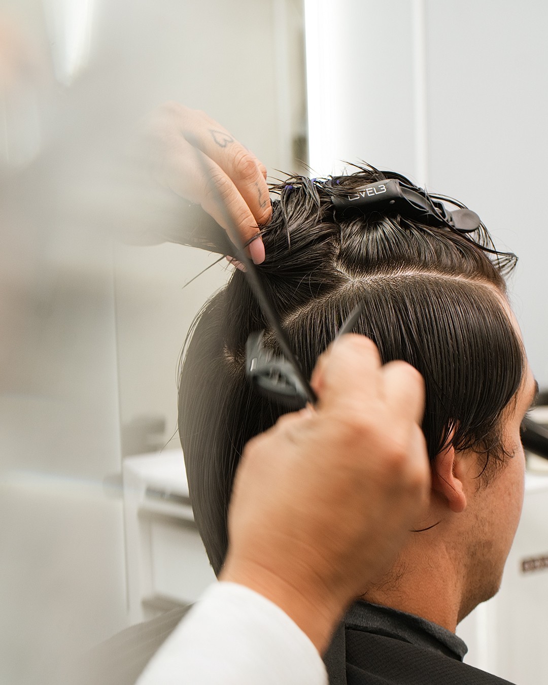
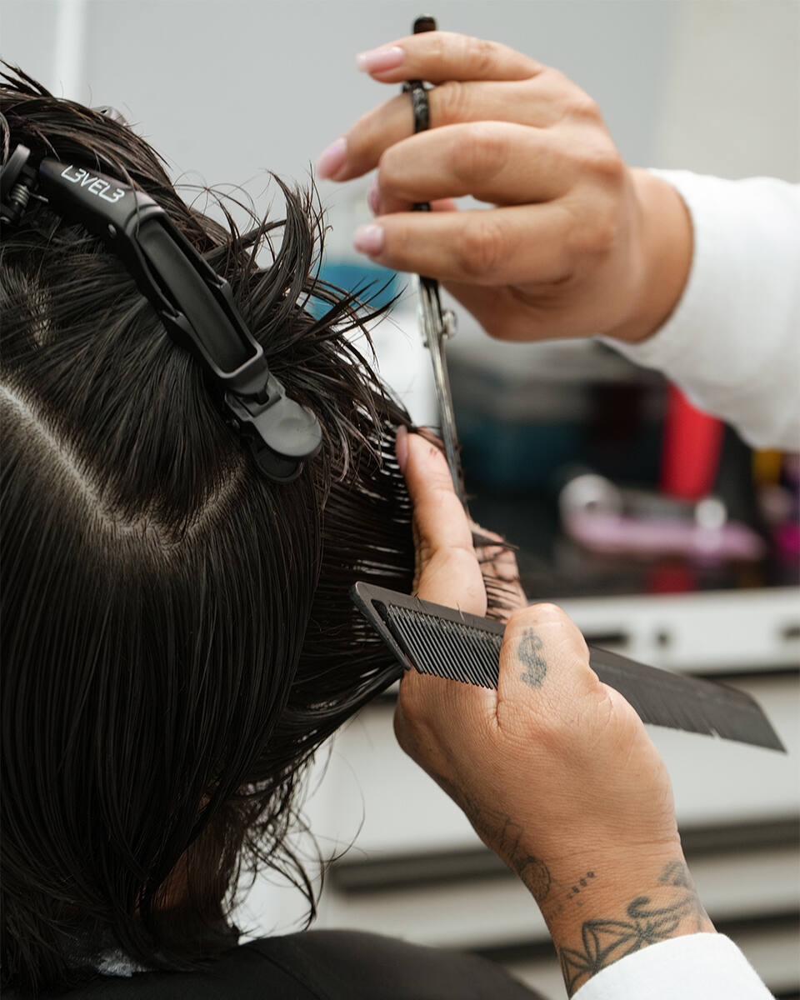

We control bulk, side lift, cowlicks and Miami humidity with consultation-led scissor work and precise tapers — with Alex, our specialist for straight, dense and coarse hair.
Book your scissor cut with AlexThe short answer: Structure Men's Studio is a private, appointment-only studio at 1110 SW 2nd Ave, Suite 4 in West Brickell — steps from Maizon Brickell. Alex offers guided consultations, all-scissor cuts, soft tapers and textured styles for men with straight, dense or coarse hair, including Korean-inspired and two-block-inspired shapes (no perm required).
If your hair lifts on the sides a week after every cut, the problem usually isn't your hair — it's how it was cut. Thick, straight, dense hair pushes outward when it's taken down too short too fast, or when the weight isn't removed correctly. A machine-driven fade can look sharp for ten minutes and then fight you for three weeks.
Alex works the opposite way: reading your density and growth pattern first, then removing weight with scissors so the hair sits down, keeps movement, and grows out cleanly.
Face, density, growth pattern and how your hair behaves.
The shape that suits your hair and your routine.
Scissor work and precise tapers, without rushing.
Drying, product and timing advice so it lasts.


Real client work at Structure. Ask Alex to walk you through what will suit your growth pattern.
All-Scissor Haircut — 60 min — $60. Guided Haircut (full consultation) — 60 min — $75. For most thick straight hair, we recommend starting with the Guided Haircut so Alex can map your growth before touching the scissors.
1110 SW 2nd Ave, Suite 4 — steps from Maizon Brickell, in West Brickell. Private studio, by appointment only, so you're never rushed.
Yes. Alex handles our consultation-led scissor cuts and soft tapers for straight, dense and coarse hair — controlling bulk, side lift and cowlicks so the shape still looks right after a few weeks.
1110 SW 2nd Ave, Suite 4, in West Brickell — steps from Maizon Brickell. Private studio, by appointment only.
For most thick straight hair we recommend scissor work or a soft taper to keep movement and avoid the sides lifting. Alex will advise during the consultation.
The All-Scissor Haircut is $60 and the Guided Haircut (full consultation) is $75. Book online.
Yes, adapted to your hair and a professional setting — no perm required. We shape it around how your hair actually grows.
Book your scissor cut with Alex